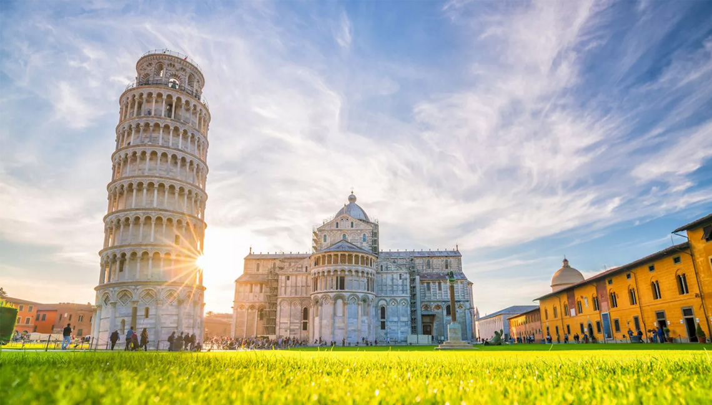
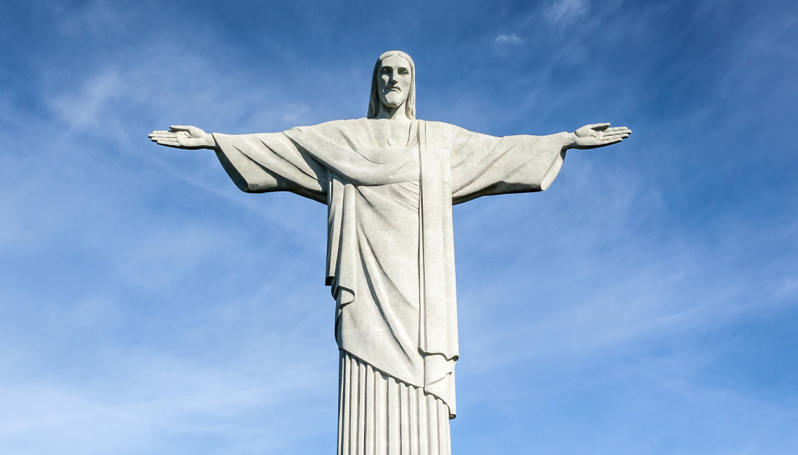
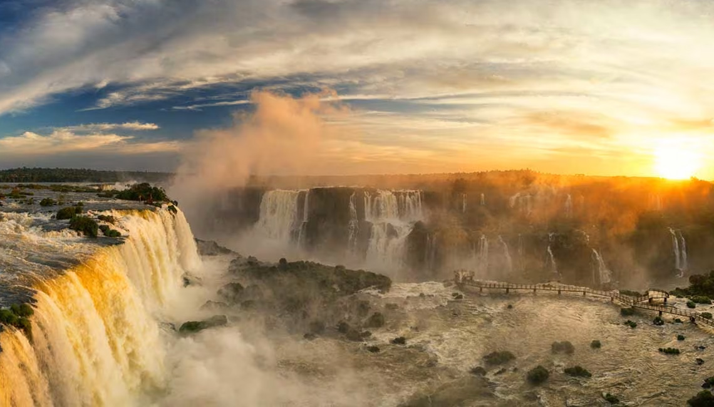
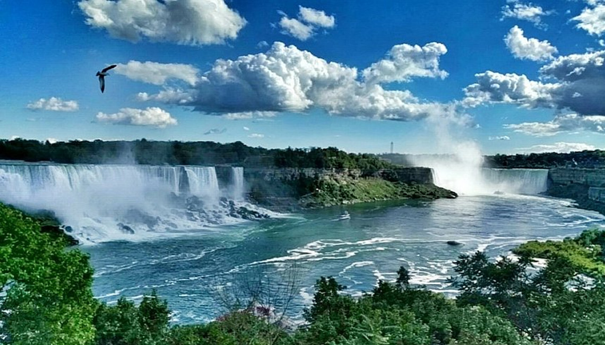
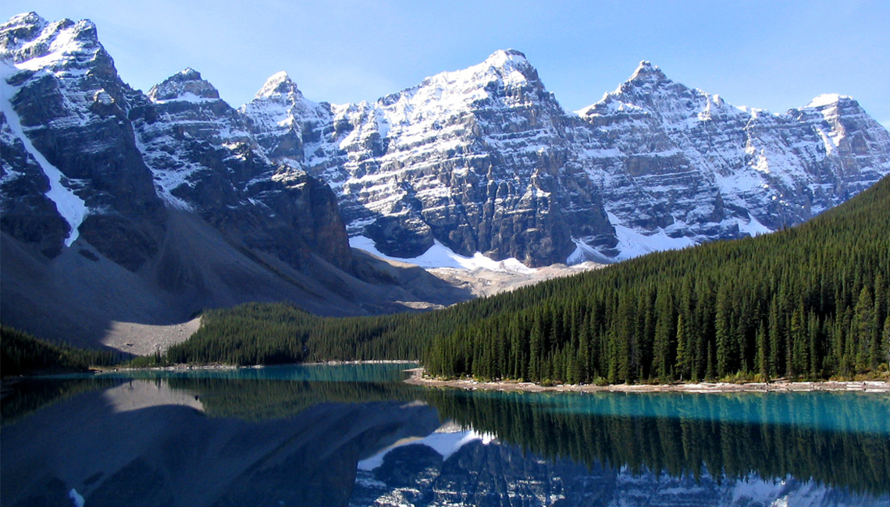
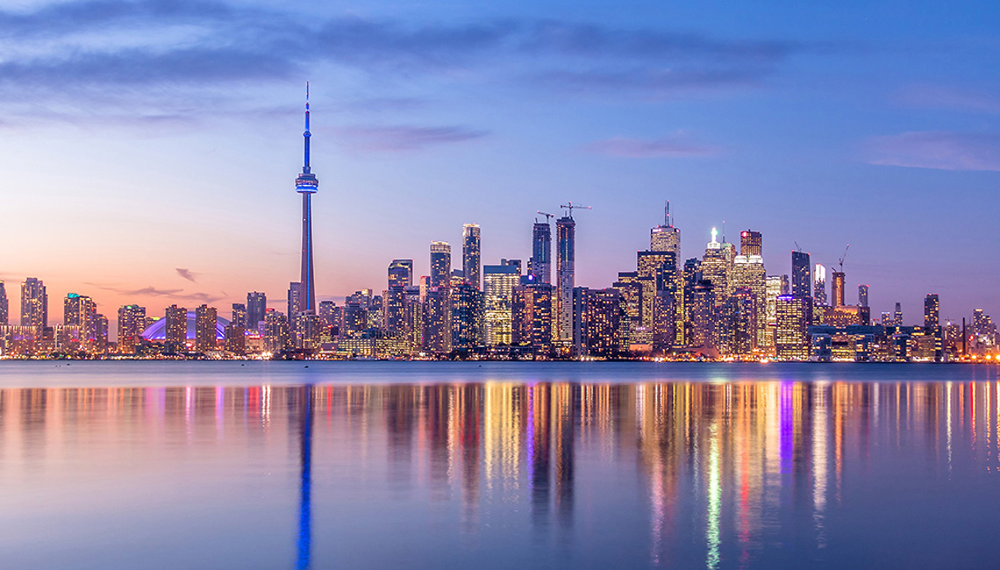
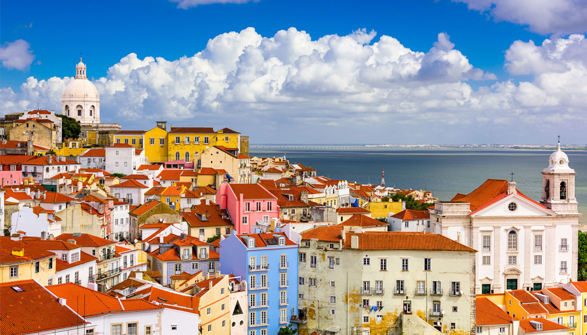

Leaning Tower of Pisa
Un ícono inolvidable

Grand Canal
El corazón romántico de Venecia

Amalfi Coast
Paisajes que parecen sacados de un sueño

Italia es uno de los países más visitados del mundo gracias a su historia, cultura y hermosos paisajes. Este país europeo es reconocido por sus monumentos antiguos, ciudades llenas de arte y lugares turísticos famosos como la Torre de Pisa, los canales de Venecia y la Costa Amalfitana. Además, Italia cuenta con una gastronomía muy popular y una arquitectura que refleja siglos de historia. Miles de personas viajan cada año para conocer sus tradiciones, disfrutar de sus paisajes y vivir una experiencia llena de belleza, cultura y romance.

Brasil es el país más grande de América del Sur y uno de los destinos turísticos más importantes del mundo. Su historia comenzó con la llegada de los portugueses en el año 1500, cuando el territorio fue descubierto por Pedro Álvares Cabral. Durante muchos años, Brasil fue una colonia de Portugal y recibió influencias europeas, africanas e indígenas que formaron una cultura muy diversa y rica en tradiciones.

El Cristo Redentor es uno de los monumentos más famosos de Brasil y del mundo. Está ubicado en Río de Janeiro y ofrece una vista impresionante de la ciudad. Su gran tamaño y significado cultural lo convierten en un lugar lleno de historia, belleza y admiración.

Las Cataratas de Iguazú son una de las maravillas naturales más impresionantes del planeta. Sus enormes caídas de agua y el paisaje rodeado de naturaleza crean un lugar mágico y sorprendente para quienes lo visitan.

Es un parque natural famoso por sus dunas blancas y lagunas cristalinas. Este paisaje único parece un desierto, pero durante ciertas épocas del año se llena de agua formando escenarios espectaculares y muy hermosos.



Lisbon es la capital de Portugal y uno de los lugares más visitados por su arquitectura, sus calles antiguas y sus increíbles paisajes. Sus tranvías tradicionales, miradores y ambiente tranquilo hacen de esta ciudad un destino lleno de encanto y cultura.

Sintra es reconocida por sus castillos, palacios y paisajes naturales. Sus construcciones coloridas y su ambiente mágico hacen que sea uno de los lugares más hermosos y especiales de Portugal.